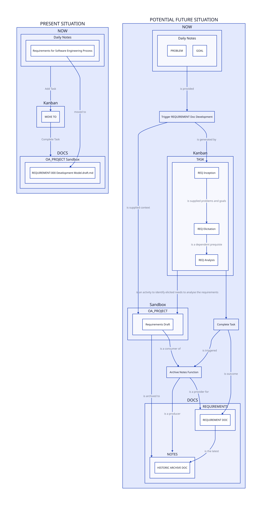

AFTER MANAGING TO TAME THE COGNITIVE OVERLOAD,
THERE IS A LOT MORE WORK INVOLVED IN KEEPING EVERYTHING IN SYNC
DISPITE IT BEING EASY. THE STRESS OF THE ARCHITECTURE WHERE
IT IS EXPECTED THINGS DECAY BUT ARE DESIGNED TO RE-EMERGE LIKE
A PHEONIX IN THE ASHES BUT BETTER IS LEADING TO FRUSTRATION
WITH THE PROJECT. THERE IS A DESIRE TO MAKE IT CLEAR WHAT GOAL IS,
TO MAKE SURE WHAT THE RIGHT THING IS AND HOW IT FITS INTO A
BIGGER PICTURE.
THERE IS A FEAR THAT BEATING THE COGNITIVE OVERLOAD PROCESS MAY BE
LOST AND THERE IS A NEED FOR A NATURAL PROCESS TO ENSURE THAT
IT IS WELL UNDERSTOOD WHY. WE WANT TO ENSURE
THAT ANY DEVELOPMENT PROCESS a) COHERES WITH THE SWEBOK (BECAUSE IT
MAKES SENSE THAT PROFESSIONAL SOFTWARE ENGINEERS KNOW ABOUT
SOFTWARE ENGINEERING),
and B) CAN PROVE ITSELF (THAT IT IMMEDIATELY ASSISTS).SEEMS TO BE ELICITATION IS THE ‘TALK TO THE RUBBER DUCK’
THIS IS SIMILAR TO HOW RETROSPECTIVES AID THE PROCESS
BASIC MANAGEMENT THEORY THAT OBSERVATIONS CHANGE BEHAVIOUR
THE DUCK IS WATCHING
AIM (POTENTIAL DOCS):
Automate (at least congitively) a set of processes and protocols. Reduce project housekeeping, to free up more time. Develop an overview of the architecture. Develop a composable resource that were used to achieve an aim that can be reused for other problems.
PROBLEMS (CURRENT STATE):
Many things that have been half done or already that, and it is a chore and distracts from remember the reason things are being done. Even though the information is there.
Sometimes steps are skipped only to cause problems later. There needs to be a way to make the process fluid and natural.
The constant context switching is being addressed by just being better (the idea is to make a lot of the tasks instictive).
But the frustration with needing to look things up what needs to go in what document and having to look for the inputs into the different stages of the process
Also a bunch of NOTES that hold imported resources, was widely impractical, so splitting where the notes go was used to solve a previous problem. Now the challenge is to make the resources, go where it makes sense logically.
Another problem is that nothing is making it through the pipeline, though convergence is taking its time, and due to being a team of size UNO that means there is a real need to switch up what is being worked on, however, there are some basically good working prototypes, but it cannot be added till it is fully realised, otherwise it will get lost (DATABASES ARE NOT ALLOWED DUE TO ARCHITECTURAL DECISIONS RESTRICTING WHAT CAN GO INTO THE CORE OF THE PROJECT).
IDENTIFIED RESOURCES/POSSIBLE SOLUTIONS:
ANALYSIS
ANALYSIS OF FUNCTIONAL REQUIREMENTS:
F(X) <= F(Y) WHERE F IS THE PROCESS, AND X IS THE CURRENT STATE, Y IS THE DOCS STATE
SUCH THAT W(X) <= W(Y) WHERE W IS PRODUCTIVE WORK THAT GETS DONE. A PROFESSIONAL FUNCTOR,
A PRO-FUNCTOR IF YOU WILL. X IS THE PRODUCT OF THE PROJECT PREORDER AND THE WORK THAT GETS
DONE IS IDEALLY A PRE-ORDER. THAT MEANS THAT WORK MUST BE DONE IN A WAY THAT EVEN IF IT GOES BACKWWADS
THAT THE WORK IS STILL HEADING IN THE RIGHT DIRECTION. MIGHT EVEN BE THE PROPER WAY TO GO.
SIMPLY THE PROCESS SHOULD NOT MAKE THINGS MORE DIFFICULT.FUNCTIONAL REQUIREMENT AS THE SOLE TEAM MEMBER I NEED TO SEE THE PROCESS AS A PICTURE SO THAT I CAN SEE HOW I AM TRACKING.
FUNCTIONAL REQUIREMENT AS THE SOLE TEAM MEMBER I MUST BE ABLE TO BEGIN A PROCESS SUCH THAT THE PARTICULAR DOCUMENT THAT HAS THE REQUIREMENTS IN A TEMPLATE.
FUNCTIONAL REQUIREMENT AS THE SOLE TEAM MEMBER I MUST KNOW THAT THESE DOCUMENTS ALIGN WERE DESIGNED TO ACHIEVE THE SAME OUTCOMES AS EACH STEP IN THE SWEBOK.
**TASK** WRITE A DESIGN DOCUMENT THAT HAS THE STRUCTURE AND EXPLAINATION/EXAMPLES.ANALYSIS OF EMERGENT REQUIREMENTS: SOLUTIONS NEED TO BE SELF-EVIDENT. NEED TO KNOW WHERE THINGS ARE EASILY (THERE IS A NATURAL CORRESPONDENCE BETWEEN RELATED TASKS AND FOCUS). NEED TO KNOW WHERE TO SEE THE BIG PICTURE (IDENTIFY THE REALISED PATHWAYS). NEED TO ENSURE EACH THING CONTAINS ENOUGH INFORMATION TO DO WITHIN ITSELF. NEED TO GET THINGS DONE AND IN A KNOWN STATE. DOCS CHANGES ONLY INVOLVE DISTILLATION OF THE STEPS. EVERYTHING SHOULD BE A PREORDER, EVERYTHING HAS AN INITIAL POINT, AN INCEPTION. THE STRUCTURE OF THE WORK SHOULD
ANALYIS OF NON FUNCTIONAL REQUIREMENTS: RETRIEVABILITY: RESOURCES ARE EASILY ACCESSED OBSERVABILITY: CAN SEE THE THINGS GET DONE. TRACABILITY: WHERE THINGS COME FROM ARE IDENTIFIED. USABILITY: WORK FLOW IS BETTER THAN IT WAS. UTILITY:
ASSUME NOT NEEDING TO REVISE THE DOCUMENT ADDED. BUT THE FIRST REQ. IS INITIAL POINT.
THIS IS HOW WE WILL USE EMERGENCE TO SOLVE THE PROBLEM, AN INITIAL SELF-SPECIFYING INITIAL OBJECT.
THIS IS THE DESIGN DOC PART.
WHAT WE HAVE -> WHAT WE DO -> WHAT WE WANT TO DO -> WHAT WE WILL HAVE
WHAT WE HAVE: A NEW STRUCTURE FOR THE DOCUMENTS. ARE EXISTING DISTILLATION OF SWEBOK REQUIREMENTS KNOWLEDGE AREA NOTES AND A DIAGRAM TO EXPLAIN IT. PROBABLY NOTES ON MINSKYS RESOURCEFULNESS AND OBJECTIVES STUFF. A USEFUL REFERENCE BUT NONETHELESS. DESIGN DOCUMENT PROTOTYPES AND A DRAFT DESIGN DOCUMENTS, AND AI SUGGESTION ON WHAT NEEDS TO BE IN THERE.
THIS IS TWO SETS OF DIAGRAMS.
AND HOW WE WILL GET THERE.

PRESENT SITUATION: {
NOW -> Kanban.TASK: Add Task
Kanban.TASK -> DOCS: Complete Task
Kanban: {
TASK: MOVE TO
}
NOW: {
Daily Notes.Requirements for Software Engineering Process
}
DOCS: {
OA_PROJECT Sandbox."REQUIREMENT-000 Development Model.draft.md"
}
NOW.Daily Notes.Requirements for Software Engineering Process -> DOCS.OA_PROJECT Sandbox."REQUIREMENT-000 Development Model.draft.md": moved to
}
POTENTIAL FUTURE SITUATION: {
NOW.Daily Notes: {grid-columns: 2;PROBLEM; GOAL;
#PROBLEM -> NEED <- GOAL
}
NOW.Daily Notes -> Trigger REQUIREMENT Doc Development: is provided
# NOW.Daily Notes.PROBLEM -> Trigger REQUIREMENT Doc Development: is provided
#NOW.Daily Notes -> Sandbox.OA_PROJECT: trigger Inception Command
Trigger REQUIREMENT Doc Development -> Sandbox.OA_PROJECT: is supplied context
# Frees up sandbox clutter and provides a location within the docs
# namespace for linking historic documents
Sandbox.OA_PROJECT -> DOCS.NOTES: is archived to
Archive Notes Function -> DOCS.NOTES: is a producer
Complete Task -> Archive Notes Function: is triggered
Sandbox.OA_PROJECT.Requirements Draft -> Archive Notes Function: is a consumer of
Archive Notes Function -> DOCS.REQUIREMENTS: is a provider for
DOCS.REQUIREMENTS.REQUIREMENT DOC -> DOCS.NOTES.HISTORIC ARCHIVE DOC: is the latest
Kanban.TASK -> Sandbox.OA_PROJECT: is an activity to identify elicited needs to analyse the requirements
#Sandbox.OA_PROJECT.Requirements -> OA_NOTE.Requirements.V1: is archived
#Sandbox.OA_PROJECT.Requirements Draft -> Sandbox.OA_PROJECT.Requirements Draft: is symlink target
Trigger REQUIREMENT Doc Development -> Kanban.TASK: is generated by
#NOW.Daily Notes.PROBLEM -> Kanban.TASK.REQ Elicitation: ADD ELICITATION SUBTASK
#NOW.Daily Notes.PROBLEM -> Kanban.TASK.REQ Analysis: ADD ANALYSIS SUBTASK
Kanban.TASK: {label: TASK}
Kanban.TASK.Start: {label: REQ Inception}
Kanban.TASK.Start -> Kanban.TASK.REQ Elicitation: is supplied problems and goals
Kanban.TASK -> Complete Task
Kanban.TASK.REQ Elicitation -> Kanban.TASK.REQ Analysis: is a dependent prequiste
# Kanban.TASK.REQ Elicitation -> Sandbox.OA_PROJECT.Requirements Draft: is added to
# Kanban.TASK.REQ Analysis -> Sandbox.OA_PROJECT.Requirements Draft: is added to
Complete Task -> DOCS.REQUIREMENTS.REQUIREMENT DOC: is outcome
# Trigger REQUIREMENT Doc Development -> DOCS.REQUIREMENTS.REQUIREMENT DOC DRAFT SYMLINK: is created by
# DOCS.NOTES.Requirements Draft -> DOCS.REQUIREMENTS.REQUIREMENT DOC DRAFT SYMLINK: is a resource
# Complete Task -> DOCS.REQUIREMENTS.REQUIREMENT DOC DRAFT SYMLINK: removes
#DOCS.REQUIREMENTS.REQUIREMENT DOC
# NOW.Daily Notes.PROBLEM -> Sandbox.OA_PROJECT.Requirements Draft: Start Requirements Process
}